Populations/Samples and Descriptive Statistics
SDS 320E
Introduction to Statistics
Intro to Statistics
- Statistics - the art of collecting, organizing, summarizing, and describing data as well as drawing inferences from the data.- Dr. Amy Maddox
- Statistics quantifies our uncertainty about our data i.e Does our results from our sample generalize to the entire population?
Example
Suppose the FDA requires more than 50% of possible patients to see improvement for a proposed drug to be approved. A pharmaceutical company in Austin, Tx has developed a new Alzheimer’s drug which is supposed to improve mental cognition. The company just finished its clinical trial and found 50.5% of those in the sample had improved mental cognition.
- What are some reasons the drug should be approved?
- What are some reasons the drug should NOT be approved?
Population and Census
Goal of Statistics
Generally, the goal of statistics is to determine some characteristic about the population of interest.
- We can only do this with 100% accuracy if a census is taken
- Census - a survey of the entire population of interest
- However, what is the issue with a census?
- Census are very rare and in most cases unavailable
- However, what is the issue with a census?
Example
For a business you want to determine whether customers would be interested in purchasing a new product that is launching. What is the population of interest?
All current customers or all possible customers?
Solution.
Issue: It is impossible to get a census because it is impossible to survey all possible customers (We do not know who all the possible customers are).
When We Don’t Have A Census
- Since we can not take a survey of the entire population, generally we take a ______
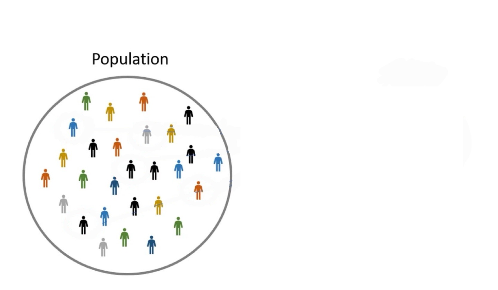
- Since we can not take a survey of the entire population, generally we take a sample
- Sample - a subset of the population of interest
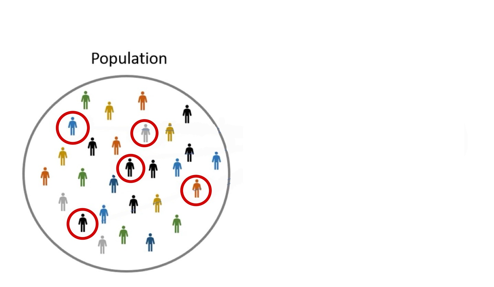
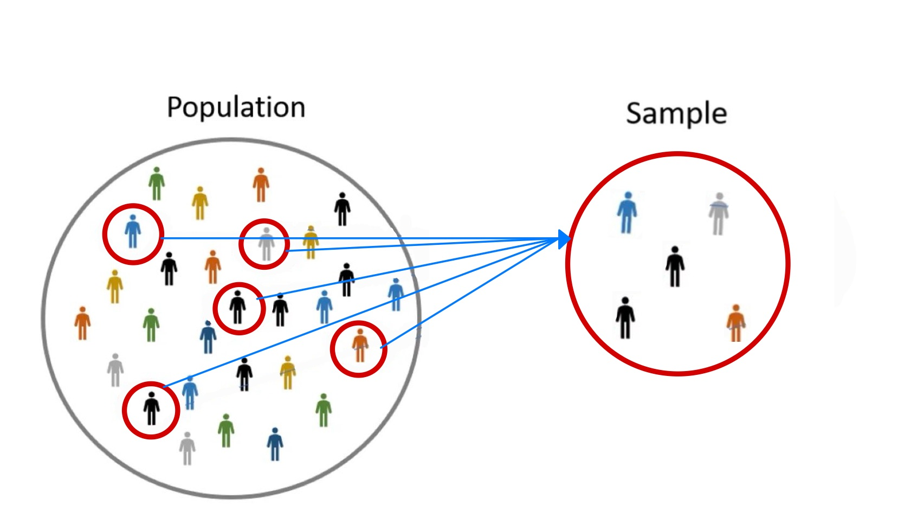
Sample Cont.
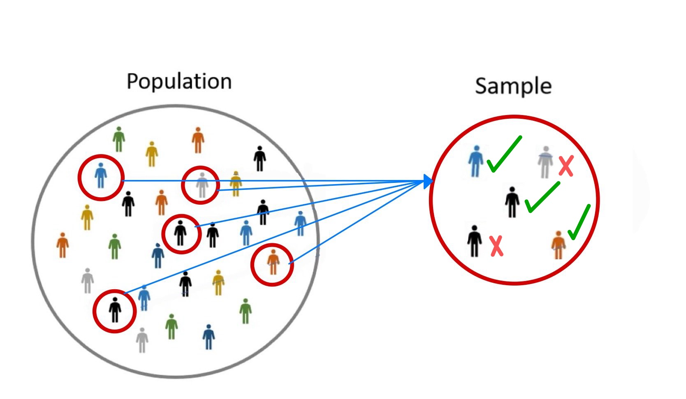
Example
Lets return to our previous example. Suppose a majority of the sample says they would purchase the new product that is launching. Does this guarantee the majority of the population will purchase the new product that is launching?
Solution: No! This result is just based off one sample. We can never say something in a sample guarantees something in the population. Remember, we will only know everything about a population if & only if we take a census
- If we took another sample, are we going to get the exact same results?
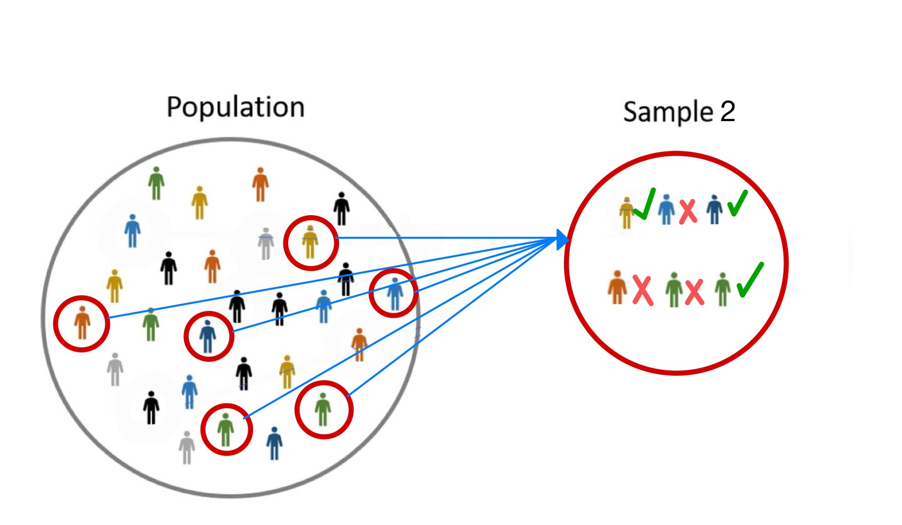
Example
Lets return to our previous example. Suppose a majority of the sample says they would purchase the new product that is launching. Does this guarantee the majority of the population will purchase the new product that is launching?
Solution: No! This result is just based off one sample. We can never say something in a sample guarantees something in the population. Remember, we will only know everything about a population if & only if we take a census
Most likely not!
Why Statistics is Hard
- In statistics we are trying to solve a really hard and nearly impossible problem
- Goal: Infer something about the population given just one sample
Example
Suppose two students are each given a few puzzle pieces and are asked to guess what the puzzle is about.
- Student 1 claims the puzzle makes an ocean
- Student 2 claims the puzzle makes the sky
Which student is correct??
Why Statistics is Hard Cont.
- Again, it is impossible to know without taking a census
- Both students were partially correct and made reasonable inference based off their puzzle pieces (data)
- Now imagine the total number of puzzle pieces is in the millions, billions, or even trillions. This becomes a very hard problem!
- This is what we are dealing with in statistics. Using a relatively small sample to make inference about an entire population
Data and Statistics
What is Data?
- To understand data manipulation, visualization, and applied methodology, we must understand what we mean by “data”
- Data is generally any collection of information
- In statistics, generally, data consist of \(n\) observations and \(p\) variables (features)
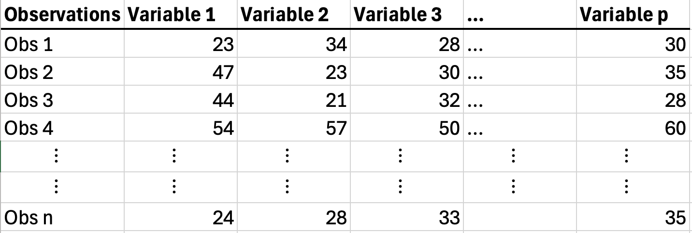
- Data is often collected in spreadsheet form via .csv files (Comma Separated Values)
What is Data? Cont.
Example
Algorithm stock trading has risen in popularity with AI, however the “buy and hold” strategy often still outperforms algorithms. Thus, is it possible to determining good stocks to “buy and hold” by just a companies 10-k filings? We consider stock return data for a companys’ previous 2017 10-k filing with their 2018 end of year stock return.
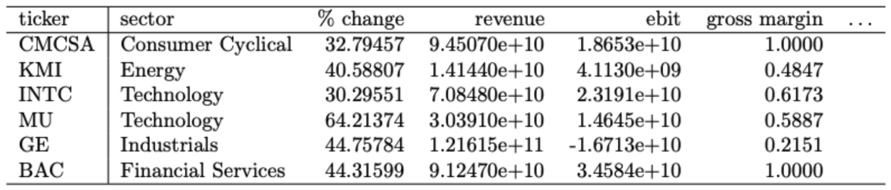
- 2, 716 stocks or companies
sample size is n = 2,716
- 103 variables (features) consisting of 10-k filing statement metrics
p = 103
- The target variable of interest is the % Change (stock return)
Branches of Statistics
- The field of statistics can be generalized into two categories
Statistics
Descriptive
Inferential
- Collecting (Mining) Data
- Processing Data
- Visualizing Data
- Summarizing Data
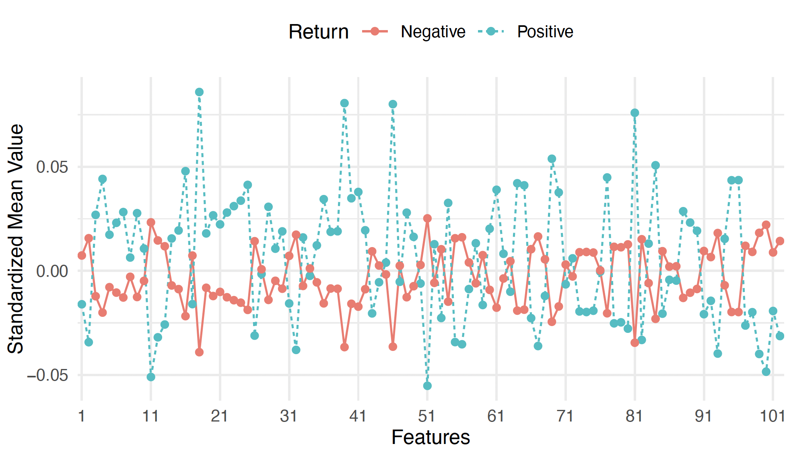
- Making inferences and
drawing conclusions
from data
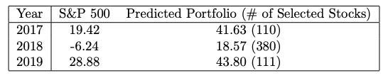
Types and Sources of Data
The methods and analyses we apply to data and the conclusions we can draw depend on:
- What kind of data we have
- Is it qualitative or quantitative?
- On what scale was the data measured?
- Where or how we obtained our data
- Is it experimental or observational?
- Is it population (census) data or just from a sample?
- This is for both Descriptive & Inferential statistics
- Different data types will require different graphs and different analyses
Types and Sources of Data Cont.
- Qualitative data
- Quantitative data

- Quantitative data
is data that is categorical in nature also referred to as just categorical data
- True/False
- Male/Female
- Department
is data that is numerical in nature
- Currency ($, ¥, and ect.)
- Height, weight, distance, time, and ect.
- Number of …
- Sales made
- deaths
- followers gained
}
Continuous data is NOT countable
}
Discrete data is countable
Types and Sources of Data Cont.
Example with shoes size and one more
Measures of Data: Parameter vs Statistic
- When we take a measure of data, we are dealing with either a parameter or a statistic
- Parameter: a measure of the population
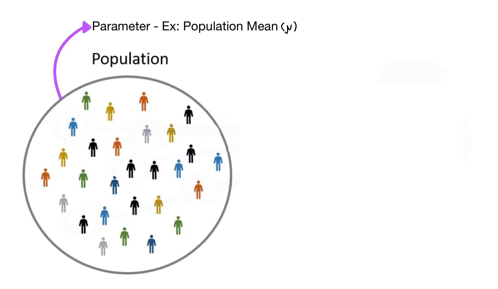
- A fixed value (constant) and generally unknown
- When is a parameter known? Only when a census is taken!
- Statistic: a measure of the sample
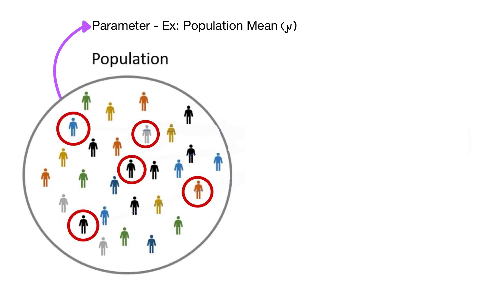
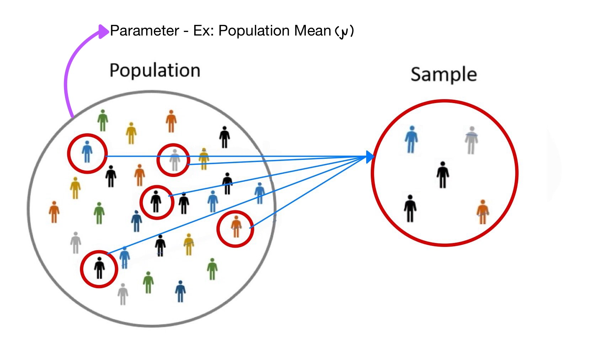
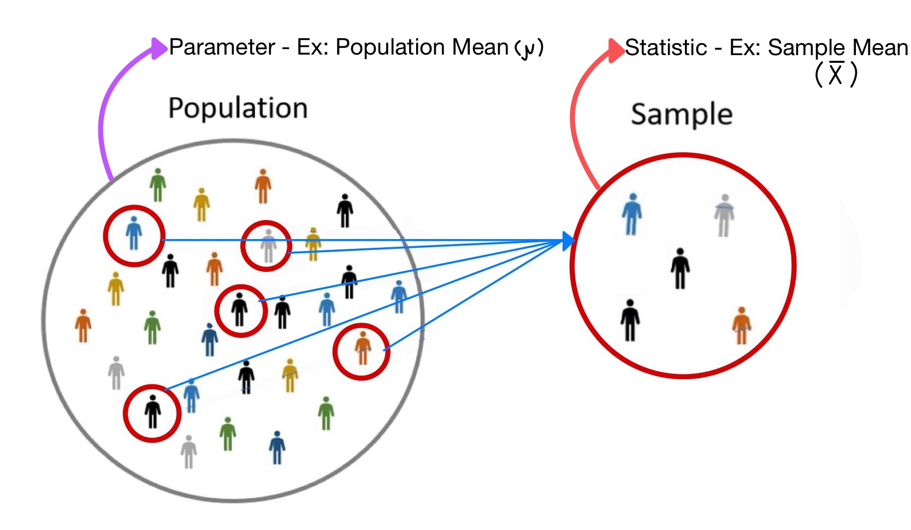
- A random variable, i.e. it will vary from sample to sample
A statistic estimates the parameter
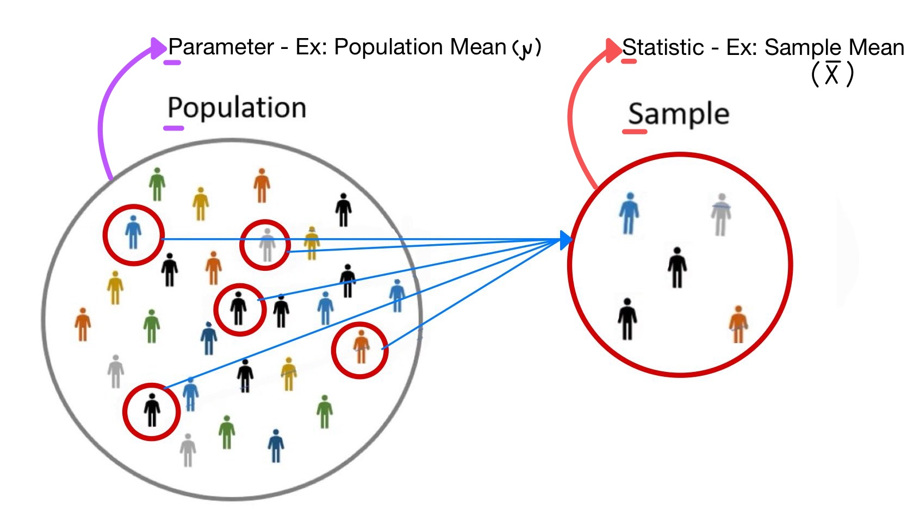
A statistic estimates the parameter
Solution.
VERY IMPORTANT SLIDE
Descriptive Statistics
Measures of Data: Central Location
- Measure of central location describe the “typical” value in a dataset
- Mean (Arithmetic)
mean() - Median
median() - Mode
DescTools::Mode() - Geometric Mean
DescTools::GeoMean()
Measures of Data: Mean
- Mean (Arithmetic): average value of data
Population Mean
\[\mu = \sum_{i = 1}^{N}\frac{X_{i}}{N}\]
Sample Mean
\[\overline{x} = \sum_{i = 1}^{n}\frac{x_{i}}{n}\]
We use \(\bar{x}\) to estimate \(\mu\)
Measures of Data: Median
- Median: middle value of data
- If # of observations is even, then the median is average of the two middle values
Measures of Data: Mean vs Median
- Mean and Median both describe the “typical” value or center of a dataset
- Why use both? or When is one preferred?
Example
Ex: Suppose as a real estate investor, we are interested in evaluating a newly built neighborhood.
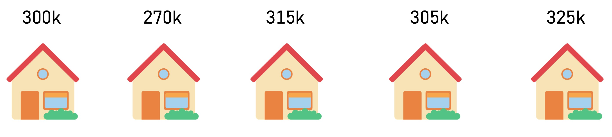
We determine the Mean is $303,000 and the Median is $305,000. Which measure should we use to describe the “typical” value of a home in the neighborhood?
Solution: In this case both the mean and median are about the same, so there is no preference.
Measures of Data: Mean vs Median
What if we changed the value of one of the homes?
Example
Ex: Suppose as a real estate investor, we are interested in evaluating a newly built neighborhood.
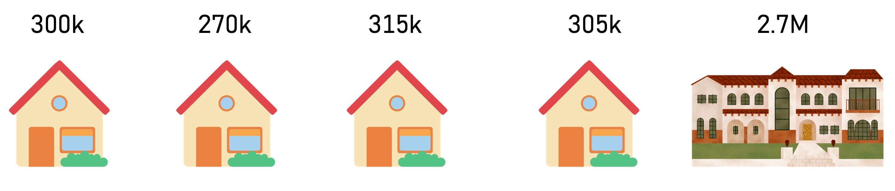
We determine the Mean is $303,000 and the Median is $305,000 Which measure should we use to describe the “typical” value of a home in the neighborhood?
Example
Ex: Suppose as a real estate investor, we are interested in evaluating a newly built neighborhood.
We determine the Mean is $778,000 and the Median is $305,000 Which measure should we use to describe the “typical” value of a home in the neighborhood?
Solution: In this case, the median best represents the “typical” value of a home in the neighborhood. This is because the mean is inflated by the outlier.
- Resistant Measure - A measure that is not affected by outliers
- The median is a resistant measure but the mean is not
Measure of Data: Locations
- Percentile: The \(m^{\text{th}}\) percentile, \(P_{m}\), is the value \(x\) such that \(m\%\) of the data values are less than \(x\) and \((100 - m)\%\) are greater than \(x\).
- percentile provide measure of specific locations
Question
If you have your IQ tested, would you rather be told you are in the \(98^{\text{th}}\) percentile or the \(2^{\text{nd}}\) percentile?
Solution: The \(98^{\text{th}}\) percentile because this means you have an IQ higher than 98% of all others.
Measure of Data: Locations Cont.
- Quartiles: percentiles that divides the data into quarters
- \(Q_{1} = P_{25}\)
- \(Q_{2} = P_{50}\) median
- \(Q_{3} = P_{75}\)
Measures of Data: Variability
- Variance: average value the data varies from the mean in \(\text{units}^{2}\)
Population Variance
\[\sigma^2 = \frac{\sum_{i = 1}^{N}(X_{i} - \mu)^{2}}{N}\]
Sample Variance
\[s^2 = \frac{\sum_{i = 1}^{N}(x_{i} - \bar{x})^{2}}{n - 1}\]
- Standard Deviation: square root of variance i.e. average value the data varies from the mean in actual units
Population Standard Deviation
\[\sigma = \sqrt{\sigma^{2}}\]
Sample Standard Deviation
\[s = \sqrt{s^{2}}\]
Measures of Data: Variability
- Inner Quartile Range (IQR): variability of the middle 50% of data values \[IQR = Q_{3} - Q_{1}\]
[1] 2.75 75%
2.75 - Resistant Measure
- Variance/Standard Deviation ❌
- IQR ✅

Derik Boonstra, Ph.D.